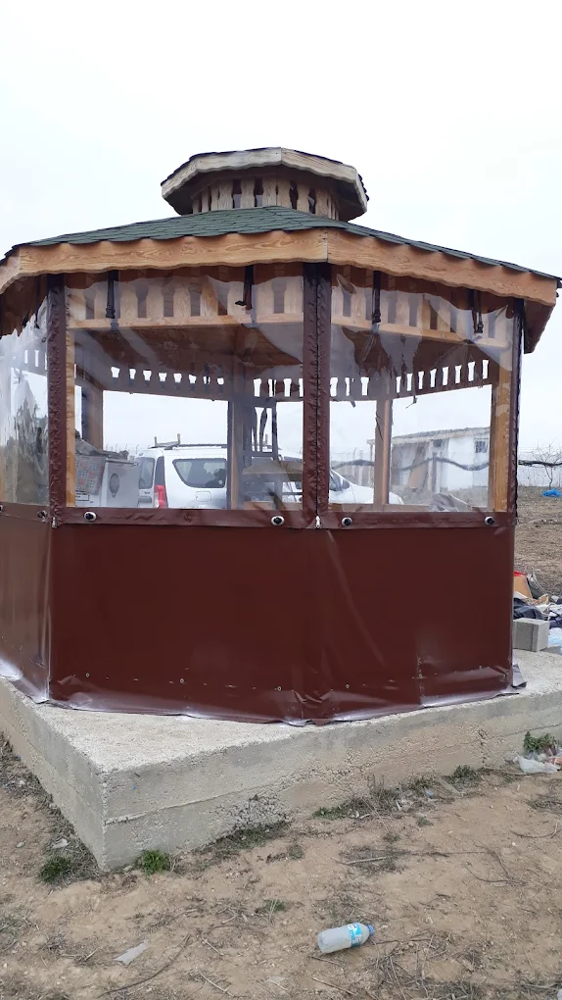
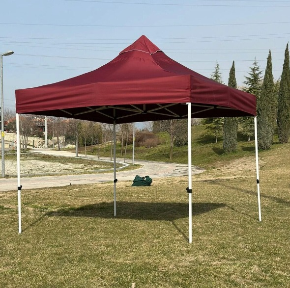
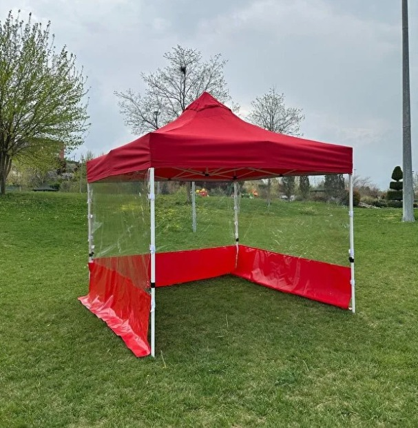

Hızlı Kurulum, Üstün Koruma.
Profesyonel kalitede, taşınabilir gölgelendirme sistemleri. Etkinlikleriniz ve dış mekan yaşam alanlarınız için mühendislik harikası çardak çözümleri.



Mühendislik Harikası Detaylar
Her bir parçası zorlu dış mekan koşullarına dayanacak şekilde özel olarak tasarlanmış ve test edilmiştir.
Güçlendirilmiş Alüminyum İskelet
Hafif ancak son derece dayanıklı toz boyalı alüminyum profil. Rüzgara ve bükülmelere karşı ekstra direnç sağlayan çapraz bağlantı sistemi.

%100 Su Geçirmez Kumaş
PU kaplamalı, yüksek denye polyester kumaş. Dikiş yerlerindeki özel kaynak bantları ile suya karşı tam koruma sağlar.
UV50+ Güneş Koruması
Zararlı güneş ışınlarını engelleyen özel yüzey işlemi. Uzun süreli kullanımlarda solmaya karşı dirençli yapı.
60 Saniyede Kurulum
Akordeon sistemi sayesinde hiçbir alet gerektirmeden, iki kişi ile dakikalar içinde kullanıma hazır hale gelir.
Yangın Geciktirici
Ticari kullanım standartlarına uygun, alev almaz özellikte sertifikalı kumaş teknolojisi.